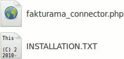

Damit Fakturama Bestellungen aus dem Webshop abrufen kann ist es notwendig, die Schnittstelle zu Fakturama auf dem Server des Shopsystems zu installieren.
Im Downloadbereich auf der Fakturama Projektseite finden sich Schnittstellen zu unterschiedlichen Shopsystemen. Entpacken Sie das entsprechende ZIP Archiv auf Ihrem Rechner. Im entpackten Ordner müssen sich folgende zwei Dateien befinden:
Die Datei INSTALLATION.TXT beschreibt die Installation. Die Dateien fakturama_connector.php muss auf den Webserver in den Ordner:
/admin
kopiert werden.